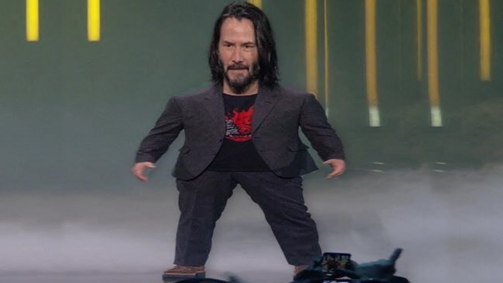

Мама сказала, сейчас моя очередь играть в XBox
Основано на меме "Маленький Киану Ривз"
Год создания: 2019
Оригинальное название: Маленький Киану Ривз (Mini Keanu Reeves)
Теги #маленькийкиану #маленькийяготов
Оригинальное название: Маленький Киану Ривз (Mini Keanu Reeves)
Теги #маленькийкиану #маленькийяготов
9 июня 2019 года актер Киану Ривз представил новый трейлер игры Cyberpunk 2077 с самим собой в одной из ролей. Презентация прошла в рамках конференции E3. Во время нее один из слушателей крикнул из зала: “Ты потрясающий” (You are breathtaking – дословно “Ты захватываешь дух”). В ответ на это Киану Ривз ответил: “Нет, это ты потрясающий. Вы все потрясающие”
Этот момент стал главным мемом с выставки E3. Пользователи начали делать картинки с Киану Ривзом, который показывает на кого-то пальцем и называет его “потрясающим”. В тот же день отфотошопленная картинка появилась в твиттере. Ее опубликовал пользователь @KojiMads. Кадр с непропорционально коротким Киану Ривзом также стал вирусным и разошелся на мемы.
10 июня пользователь 4chan впервые использовал картинку со сжатым Киану в качестве мема. Он дописал к кадру фразу Mom said its my turn on the xbox (“Мама сказала, сейчас моя очередь играть в XBox”). В таком ключе мемы распространились по соцсетям. А в середине июня формат пришел в рунет.
Этот момент стал главным мемом с выставки E3. Пользователи начали делать картинки с Киану Ривзом, который показывает на кого-то пальцем и называет его “потрясающим”. В тот же день отфотошопленная картинка появилась в твиттере. Ее опубликовал пользователь @KojiMads. Кадр с непропорционально коротким Киану Ривзом также стал вирусным и разошелся на мемы.
10 июня пользователь 4chan впервые использовал картинку со сжатым Киану в качестве мема. Он дописал к кадру фразу Mom said its my turn on the xbox (“Мама сказала, сейчас моя очередь играть в XBox”). В таком ключе мемы распространились по соцсетям. А в середине июня формат пришел в рунет.